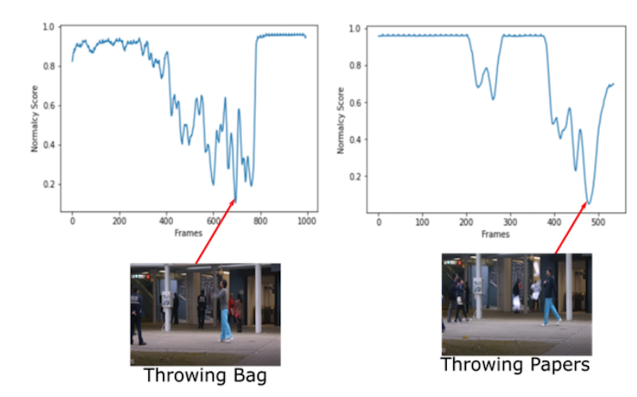

Publications

Temporal Cues from Socially Unacceptable Trajectories for Anomaly Detection
Authors: Neelu Madan, Arya Farkhondeh, Kamal Nasrollahi, Sergio Escalera, Thomas B Moeslund.Conference: Proceedings of the IEEE/CVF International Conference on Computer Vision (ICCV) Workshops, 2021
PDF Cite